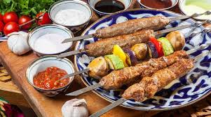

Kebab

Description
One cannot imagine Uzbekistan without sunny flatbread, hot pilaf and, of course, without a delicious shish kebab
Smoke that is soaked in the aroma of fried meat on the coals goes up from the barbecue, appealing for gourmets.
Ingredients
- Beef or Lamb
- Broadtail Fat
- Onions
- Coriander
- Spices
Steps
- The first step is to cut off the meat veins, cut it into slices across the fibers.
- Next, the meat is slightly beaten off and put in a bowl (in which there is a marinade).
- The next step is to prepare the marinating. To do this, grind the spices and salt in a mortar, cut the onion. All this is added to the dishes to the meat and pour carbonated water. Leave the meat in the marinade for an hour.
- Now cut the fat tail, and begin to string it on a skewer, alternating with pieces of meat. It remains to light a fire and fry the meat at an average temperature.